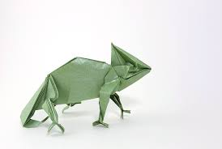
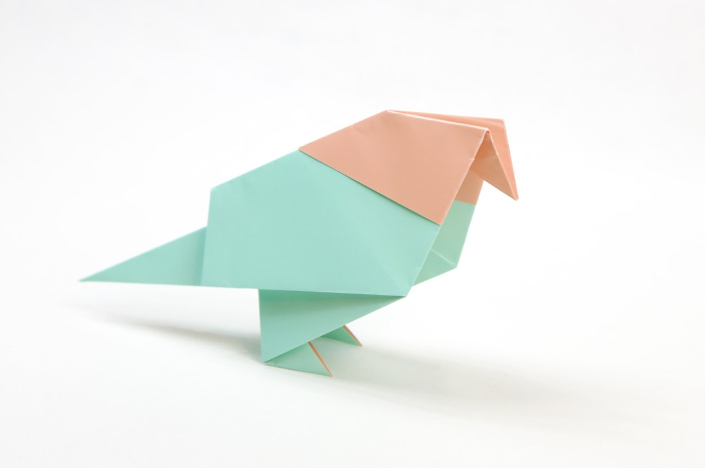

Origami is the art of paper folding, which is often associated with Japanese culture.
In modern usage, the word "origami" is used as an inclusive term for all folding practices, regardless of their culture of origin.
.jpg)
CAMEL
- Camels have three sets of eyelids and two rows of eyelashes to keep sand out of their eyes.
- Camels have thick lips which let them forage for thorny plants other animals can't eat.
- Click on the image for a tutorial.

CHAMELEON
- Camels have thick lips which let them forage for thorny plants other animals can't eat.
- Special color pigment cells under the skin called chromatophores allow some chameleon species to change their skin color.
- Click on the image for a tutorial.

PIGEON
- Pigeons are incredibly complex and intelligent animals. They are one of only a small number of species to pass the ‘mirror test’ – a test of self recognition
- Pigeons have excellent hearing abilities. They can detect sounds at far lower frequencies than humans are able to, and can thus hear distant storms and volcanoes.
- Click on the image for a tutorial.
.jpg)
PANDA
- An adult panda weight more than 45 kilos (100 pounds), and can be about 1.5 meters (5 feet) long!
- Not all giant pandas are black and white. A few are brown and white, but these are very rare.
- Click on the image for a tutorial